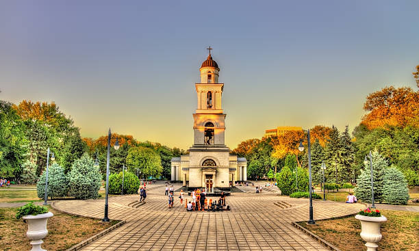
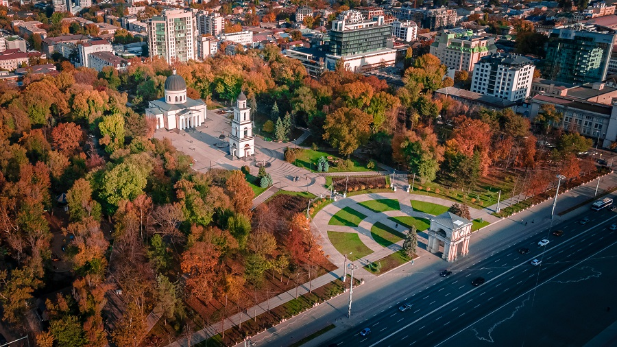
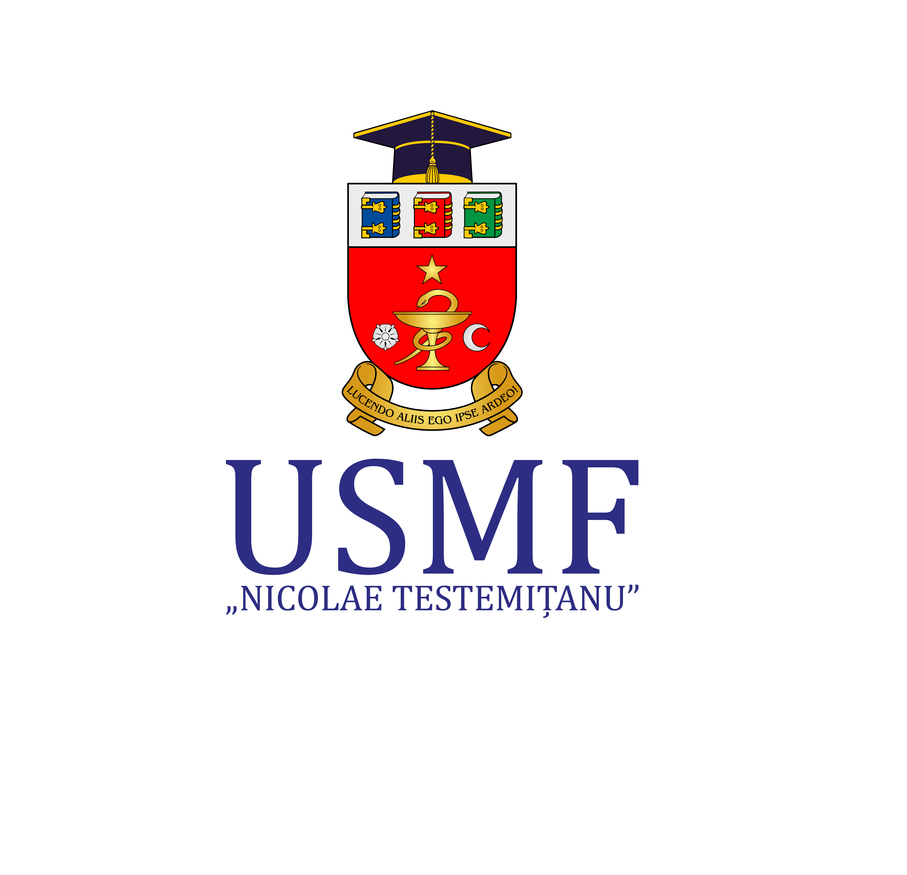
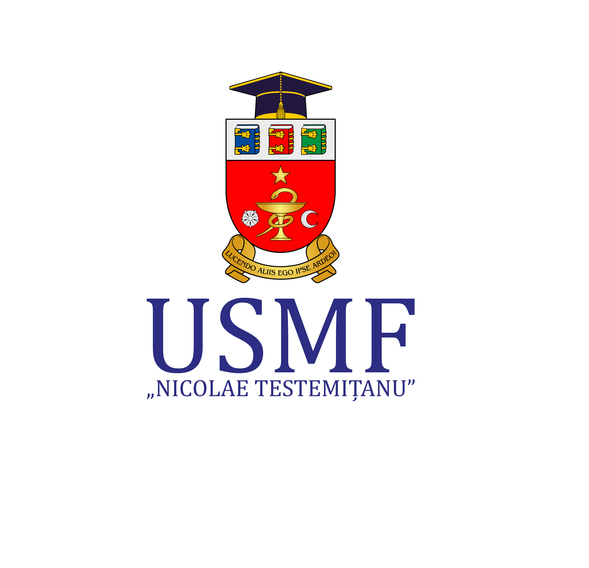

Welcome
Discover the East European Bioinformatics and Computational Genomics School, presented by Technical University of Moldova and Mangul Lab (University of Southern California) in partnership with State University of Medicine and Pharmacy of Moldova.
This year’s programme features an exceptional lineup of world-class Speakers from renowned universities in the US, Switzerland, France, Denmark, Turkey, Poland, and Romania. Immerse yourself in captivating lectures, inspiring keynotes, and hands-on sessions that will elevate your knowledge, you can see in Program Agenda
We offer two modes of participation: in-person attendance or remote participation (available exclusively for non-Moldovan applications). Secure your spot by applying through our Registration process.
Limited travel fellowships are available for in-person attendees. Secure your spot now by visiting our registration page.
Upon successful completion of the program, participants will receive an esteemed Certificate in Bioinformatics, recognizing their dedication and expertise gained through active engagement in EEBG2023.
For any questions or concerns please contact the Local Arrangement Chair at viorelmunteanu.md@gmail.com.
Feedback
Grigore Boldirev
“Reflecting on #EEBG22, it was a truly exceptional experience that blended the joys of learning and teaching. I am thrilled to have had the opportunity to reconnect with old friends and forge new connections with fellow participants. Notably, I had the privilege of finding my PhD supervisor, Prof. Alexander Zelikovsky, from Georgia State University, USA, right here at the event. I extend my heartfelt gratitude to everyone who contributed to this iancredible journey in bioinformatics. Your enthusiasm and dedication made this experience truly unforgettable. Here's to the remarkable memories and the invaluable knowledge gained at #EEBG22!”
Irina Belous
“Those who left us amazed during our bioinformatics classes were the professors who work in the USA. We were fortunate to have them as our teachers, the people who contributed to the emergence of this discipline. They have been and continue to be at the core of this field. They had an answer to every question, and the answer was shaped in such a way that we, the less experienced in bioinformatics, could perceive it”
 
